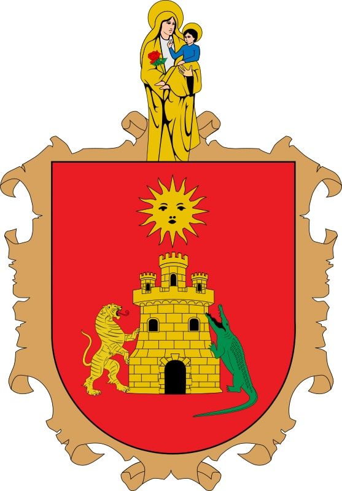

Historia
La historia republicana del Chocó comenzaría propiamente en 1906 cuando es creada la Intendencia del Chocó, desprendiéndola del Cauca y uniendo las provincias de San Juan y Atrato. En 1907 nace en Neguá Diego Luis Córdoba, quien sería el primer abogado chocoano y gran defensor de los derechos humanos de los sectores desprotegidos y marginados, especialmente las comunidades negras, las clases obreras y campesinas. Carismático líder que luchó por la creación del Departamento del Chocó, el reconocimiento real del derecho a la educación de las comunidades negras y su valoración en la sociedad colombiana. En ese mismo año, el 6 de mayo en Quibdó, es fusilado Manuel Saturio Valencia (el último colombiano sentenciado a la pena de muerte en el país), acusado de atentar contra los intereses de la sociedad blanca chocoana. En 1930, Diego Luis Córdoba organiza la Juventud Liberal Universitaria. En 1947 se crea el Departamento del Chocó con capital en la ciudad de Quibdó. En 1948 nace Amir Smith Córdoba en el corregimiento de Cértegui, quien sería uno de los hombres más importantes en la defensa de los derechos y la identidad cultural de las negritudes colombianas. Córdoba fue sociólogo y periodista, y colaboró en publicaciones nacionales e internacionales; fue fundador del Centro de Investigaciones para el Desarrollo de la Cultura Negra en Colombia. Diego Luis Córdoba murió en 1964 en Ciudad de México, y se constituyó en uno de los colombianos más importantes del siglo XX en la lucha por la defensa de los derechos humanos de las comunidades negras, obreras y campesinas. Entre los personajes ilustres de la región perteneciente al movimiento periodístico chocoano se encuentra Primo Guerrero, quien fue defensor de las comunidades más desfavorecidas, luchador incansable contra la corrupción política en la década de los años 40 del pasado siglo y firme defensor de los derechos de las comunidades afrocolombianas. Primo Guerrero fue además un destacado periodista fundador en 1940 del periódico En Guardia y amigo personal de Gabriel García Márquez, al que le unió una estimable relación desde sus tiempos de compañeros en el diario bogotano El Espectador (1954), donde García Márquez desempeñaba su labor como reportero y crítico de cine. En 1977 se crea el parque nacional de Los Katíos, unido al parque nacional Darién de Panamá como parque binacional. En 1990, algunas organizaciones de protección del medio ambiente y de los derechos humanos protestan contra planes estatales de grandes obras de infraestructura en el Departamento, tales como la construcción de un canal interoceánico o una línea férrea que una el mar Caribe con el Pacífico, dos puertos marítimos sobre el Golfo de Urabá y sobre la Bahía de Cupica, la conexión de la Carretera Panamericana y otras obras. En 1993 se crea la Corporación Autónoma Regional para el Desarrollo Sostenible del Chocó. El 13 de agosto de 2003 muere Amir Smith Córdoba. Entre el 20 y el 29 de marzo de 2004, por primera vez en la historia 1200 indígenas de los resguardos de Playita, Egoróquera y Unión Baquiaza, del río Opogodó y otros sectores, se ven obligados a huir de su propia tierra a causa de cruentos enfrentamientos entre las FARC y las AUC. El hecho es solamente una muestra más de la difícil situación de orden público que vive el departamento en algunas de sus regiones, con desplazamientos campesinos, masacres y ejecuciones por parte de los grupos violentos. Es de anotar que algunas regiones turísticas tienen establecidas condiciones de seguridad para los viajeros nacionales e internacionales.
Geografía
El Chocó es una región colombiana con una geografía variada que incluye selvas, llanuras, valles y escarpes montañosos. Es una de las regiones más biodiversas del mundo.
Ubicación
Se encuentra en la región Pacífica, al noroeste del país. Limita con Panamá y el mar Caribe al norte, con Antioquia y Risaralda al este, con Valle del Cauca al sur, y con el océano Pacífico al oeste. Es el único departamento de Colombia con costas en los océanos Pacífico y Atlántico. Relieve El terreno es un mosaico de planicies fluviomarinas, llanuras aluviales, valles estrechos y empinados, y escarpes montañosos. La selva tropical de montaña es accidentada.Clima
Tiene un clima intertropical lluvioso. Es una de las zonas más lluviosas del mundo. La temperatura promedio es de 27 °C.Biodiversidad
Es una región rica en diversidad biológica y cultural. Alberga una gran variedad de biomas, ecosistemas y especies. Es hábitat de comunidades negras, mestizos colonos, y los pueblos indígenas embera, wounaan, tule y kuna.Economía
La economía del departamento del Chocó se basa principalmente en los siguientes sectores:
Minería ⛏️
El Chocó es rico en recursos minerales, especialmente oro y platino. La minería es una de las principales actividades económicas, pero enfrenta problemas de minería ilegal y contaminación ambiental debido al uso de mercurio en la extracción.Agricultura y Pesca 🌱🐟
Agricultura: Se cultivan plátano, cacao, maíz, arroz y yuca, aunque a pequeña escala debido a las condiciones geográficas y climáticas.Pesca: Gracias a su acceso al océano Pacífico y al mar Caribe, la pesca es una fuente de empleo y alimentación, destacando la captura de camarones y peces tropicales.
Explotación Forestal 🌳
El Chocó posee grandes bosques tropicales, lo que ha generado una industria de explotación maderera. Sin embargo, la deforestación descontrolada y la tala ilegal son problemas ambientales graves.Cultura
El Chocó tiene una cultura rica y diversa, influenciada por su herencia afrocolombiana, indígena y mestiza. Su identidad se expresa a través de la música, la danza, la gastronomía y sus festividades.
Música y Danzas 🎶💃
La música del Chocó es una mezcla de ritmos africanos e indígenas, con instrumentos tradicionales como el cununo, el bombo, el guasá y la marimba.🔹 Chirimía: Un género tradicional del Chocó, donde se usan clarinetes, bombos y redoblantes.
🔹 Alabados: Cantos religiosos afrodescendientes utilizados en funerales y ceremonias.
🔹 Bunde y Abozao: Ritmos alegres que se bailan en festividades.
Simbolos Patrios
Bandera
La bandera del Chocó tiene tres franjas horizontales:
🟢 Verde: Representa la riqueza natural del departamento, su biodiversidad y selvas.
🟡 Amarillo: Representa la riqueza en minerales, especialmente el oro.
🔵 Azul: Simboliza los ríos, el mar Caribe y el océano Pacífico que rodean al Chocó.
Escudo
El Escudo del Chocó es el principal emblema y uno de los símbolos oficiales del departamento colombiano del Chocó. El escudo fue adoptado para el Chocó, mediante la Ordenanza 07 de 1957. El escudo está formado por un semiovoide dentro del cual se encuentra un castillo edificado en ladrillo amarillo sobre un fondo rojo, sobre el cual destella un sol; la portada está cuidada por un leopardo a la derecha y un caimán a la izquierda, ambos en actitud de pelea, y en la parte superior del Escudo se encuentra la Santísima Virgen.
Himno
CORO
Tierra chocóana que al grito
de ¡Viva la Libertad!,
para la historia has escrito
una página inmortal. (bis).
I
Carrasquilla y Mallarino,
Holguín, Conto y Jorge Isaacs,
son tus hijos más gloriosos,
intelectuales sin par.
Y en la gesta libertaria
Buch, Montalvo y muchos más,
eternizaron sus nombres
que la historia acoge ya.
II
Tus tres ríos seculares:
Atrato, San Juan, Baudó,
tus dos mares, tus canales,
por Napipí y Truandó,
abren rutas de progreso,
de esperanza y promisión,
y eres la tierra más rica,
de nuestra rica nación.
III
Oro tienes y platino,
tierras fecundas y buenas,
selvas vírgenes que brindan,
flores, frutos y maderas.
Y una juventud ansiosa
de temprana y clara luz
que enarbola entre sus manos
la pala, el libro y la cruz.